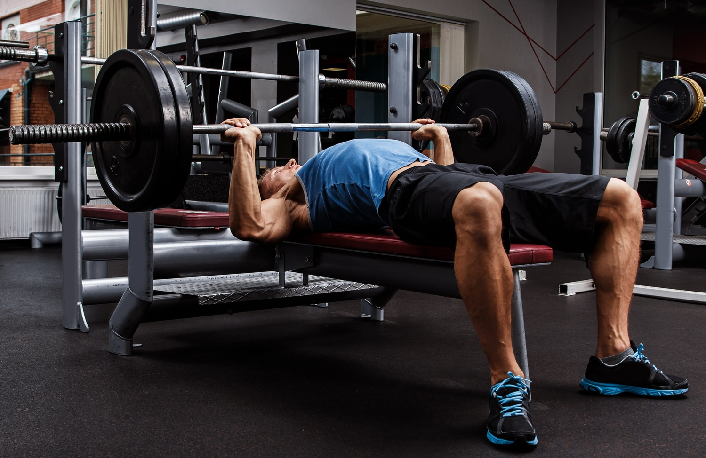

Push Split
Chest · Shoulders · Triceps — 3 days per week

The Push Split targets all pressing muscles in a single session — chest, shoulders, and triceps. By grouping these muscle groups together, you maximise overlap in movement patterns and allow your pull and leg days full recovery time. Ideal for intermediate lifters training 3–6 days per week who want to build upper body pressing strength and size efficiently.
Day A — Chest Focus
| Exercise | Sets | Reps | Rest | Notes |
|---|---|---|---|---|
| Barbell Bench Press | 4 | 5–6 | 3 min | Main strength movement — progressive overload focus |
| Incline Dumbbell Press | 3 | 8–10 | 2 min | Upper chest emphasis |
| Cable Fly / Pec Deck | 3 | 12–15 | 90 sec | Full stretch at bottom |
| Overhead Press (Barbell) | 3 | 6–8 | 2 min | Seated or standing |
| Lateral Raise | 3 | 15–20 | 60 sec | Light weight, controlled |
| Tricep Rope Pushdown | 3 | 12–15 | 60 sec | Elbows locked at sides |
| Overhead Tricep Extension | 2 | 12–15 | 60 sec | Long head stretch |
Day B — Shoulder Focus
| Exercise | Sets | Reps | Rest | Notes |
|---|---|---|---|---|
| Seated DB Shoulder Press | 4 | 8–10 | 2 min | Control the descent |
| Incline Barbell Press | 3 | 6–8 | 2 min | Upper chest / front delt |
| Arnold Press | 3 | 10–12 | 90 sec | Full rotation throughout |
| Lateral Raise (Cable) | 4 | 15–20 | 60 sec | Constant tension |
| Reverse Pec Deck | 3 | 15–20 | 60 sec | Rear delt isolation |
| Close-Grip Bench Press | 3 | 8–10 | 90 sec | Tricep mass builder |
| Skull Crushers | 3 | 10–12 | 90 sec | EZ bar preferred |
Programming Tips
- Run Push / Pull / Legs rotating. Rest at least one day between push sessions.
- Add weight to your main compound lift when you hit the top of the rep range for 2 sessions in a row.
- Lateral raises respond well to higher volume — don't skip them to save time.
- If shoulders feel fatigued, swap Day B's incline press for a cable fly.